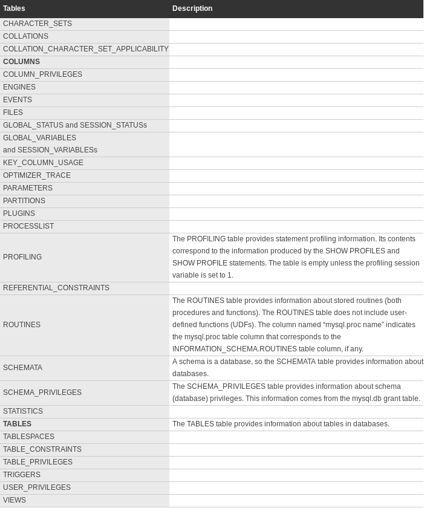

You will find below a complete list of system tables for the most popular database management systems. This list also contain specific information related to SQL injection. This reference is subject to modifications in a near future. It will include a short description of each columns and more specific details about how those can be used for SQL injection attacks.
MySQL
The reference to information schema was remove from table names below to ease reading. However, note that all those table names must be preceded by "INFORMATION_SCHEMA." (example: SELECT * FROM INFORMATION_SCHEMA.COLUMNS).

Useful Information
All users can access these tables, however they will only be able to see the rows in the tables that correspond to objects for which the user has the proper access privileges.
SQL Server
Below are listed all SQL Server system tables.

You should use information_schema instead of system tables in order to access this information.
Oracle
Below are listed all Oracle system tables.


Take note that information_schema is not supported by Oracle.